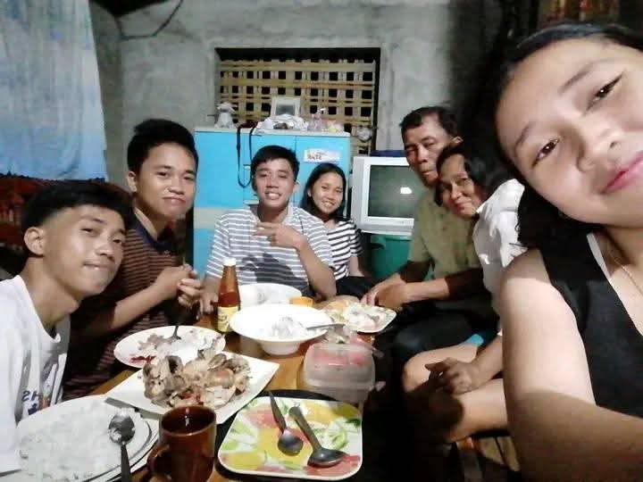

In the midst of life’s challenges and trials, let us never forget God, who is always with us. Even when situations become difficult, His guidance and care remain, and He never abandons us. Our faith in Him gives us strength and hope each day, reminding us that no matter what happens, His love and protection never change. By trusting in God, we become stronger and learn to appreciate every blessing that comes our way.
👨👩👧 My Family Moment
Family Bonding

Family is the first home of our hearts—a place where we find real love, understanding, and support. No matter what challenges come our way, they give us the strength to keep going and the comfort to stay grounded. In every laugh, every story shared, and every simple moment spent together, we’re reminded of how precious and irreplaceable family truly is.
🐱 My Cute Kittens
Playtime ng mga Kiting
Published: Dec 2025
For me, cats really help take away stress. Even when they’re not doing anything, their presence alone makes me feel lighter. I love watching them sleep or play because it instantly calms me down and makes my day better. They may